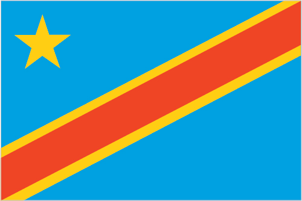

Africa :: CONGO, DEMOCRATIC REPUBLIC OF THE
Introduction :: CONGO, DEMOCRATIC REPUBLIC OF THE
-
Established as an official Belgian colony in 1908, the then-Republic of the Congo gained its independence in 1960, but its early years were marred by political and social instability. Col. Joseph MOBUTU seized power and declared himself president in a November 1965 coup. He subsequently changed his name - to MOBUTU Sese Seko - as well as that of the country - to Zaire. MOBUTU retained his position for 32 years through several sham elections, as well as through brutal force. Ethnic strife and civil war, touched off by a massive inflow of refugees in 1994 from fighting in Rwanda and Burundi, led in May 1997 to the toppling of the MOBUTU regime by a rebellion backed by Rwanda and Uganda and fronted by Laurent KABILA. KABILA renamed the country the Democratic Republic of the Congo (DRC), but in August 1998 his regime was itself challenged by a second insurrection again backed by Rwanda and Uganda. Troops from Angola, Chad, Namibia, Sudan, and Zimbabwe intervened to support KABILA's regime. In January 2001, KABILA was assassinated and his son, Joseph KABILA, was named head of state. In October 2002, the new president was successful in negotiating the withdrawal of Rwandan forces occupying the eastern DRC; two months later, the Pretoria Accord was signed by all remaining warring parties to end the fighting and establish a government of national unity. A transitional government was set up in July 2003; it held a successful constitutional referendum in December 2005 and elections for the presidency, National Assembly, and provincial legislatures took place in 2006.In 2009, following a resurgence of conflict in the eastern DRC, the government signed a peace agreement with the National Congress for the Defense of the People (CNDP), a primarily Tutsi rebel group. An attempt to integrate CNDP members into the Congolese military failed, prompting their defection in 2012 and the formation of the M23 armed group - named after the 23 March 2009 peace agreements. Renewed conflict led to large population displacements and significant human rights abuses before the M23 was pushed out of DRC to Uganda and Rwanda in late 2013 by a joint DRC and UN offensive. In addition, the DRC continues to experience violence committed by other armed groups including the Democratic Forces for the Liberation of Rwanda, the Allied Democratic Forces, and assorted Mai Mai militias. In the most recent national elections, held in November 2011, disputed results allowed Joseph KABILA to be reelected to the presidency. The DRC Constitution bars President KABILA from running for a third term, but the DRC Government has delayed national elections originally slated for November 2016. The failure to hold elections as scheduled has fueled sporadic street protests by KABILA’s opponents. In late December 2016, government officials and opposition leaders struck a last-minute deal that will require KABILA to step down after elections to be held by the end of 2017.
Geography :: CONGO, DEMOCRATIC REPUBLIC OF THE
-
Central Africa, northeast of Angola0 00 N, 25 00 EAfricatotal: 2,344,858 sq kmland: 2,267,048 sq kmwater: 77,810 sq kmcountry comparison to the world: 12slightly less than one-fourth the size of the UStotal: 10,481 kmborder countries (9): Angola 2,646 km (of which 225 km is the boundary of Angola's discontiguous Cabinda Province), Burundi 236 km, Central African Republic 1,747 km, Republic of the Congo 1,229 km, Rwanda 221 km, South Sudan 714 km, Tanzania 479 km, Uganda 877 km, Zambia 2,332 km37 kmterritorial sea: 12 nmexclusive economic zone: since 2011 the DRC has a Common Interest Zone agreement with Angola for the mutual development of off-shore resourcestropical; hot and humid in equatorial river basin; cooler and drier in southern highlands; cooler and wetter in eastern highlands; north of Equator - wet season (April to October), dry season (December to February); south of Equator - wet season (November to March), dry season (April to October)vast central basin is a low-lying plateau; mountains in eastmean elevation: 726 melevation extremes: lowest point: Atlantic Ocean 0 mhighest point: Pic Marguerite on Mont Ngaliema (Mount Stanley) 5,110 mcobalt, copper, niobium, tantalum, petroleum, industrial and gem diamonds, gold, silver, zinc, manganese, tin, uranium, coal, hydropower, timberagricultural land: 11.4%arable land 3.1%; permanent crops 0.3%; permanent pasture 8%forest: 67.9%other: 20.7% (2011 est.)110 sq km (2012)urban clusters are spread throughout the country, particularly in the northeast along the boarder with Uganda, Rwanda, and Burundi; the largest city is the capital, Kinshasha, located in the west along the Congo River; the south is least densely populatedperiodic droughts in south; Congo River floods (seasonal); active volcanoes in the east along the Great Rift Valleyvolcanism: Nyiragongo (3,470 m), which erupted in 2002 and is experiencing ongoing activity, poses a major threat to the city of Goma, home to a quarter million people; the volcano produces unusually fast-moving lava, known to travel up to 100 km /hr; Nyiragongo has been deemed a Decade Volcano by the International Association of Volcanology and Chemistry of the Earth's Interior, worthy of study due to its explosive history and close proximity to human populations; its neighbor, Nyamuragira, which erupted in 2010, is Africa's most active volcano; Visoke is the only other historically active volcanopoaching threatens wildlife populations; water pollution; deforestation; soil erosion; mining (diamonds, gold, coltan - a mineral used in creating capacitors for electronic devices) causing environmental damageparty to: Biodiversity, Climate Change, Climate Change-Kyoto Protocol, Desertification, Endangered Species, Hazardous Wastes, Law of the Sea, Marine Dumping, Ozone Layer Protection, Tropical Timber 83, Tropical Timber 94, Wetlandssigned, but not ratified: Environmental Modificationnote 1: second largest country in Africa (after Algeria) and largest country in Sub-Saharan Africa; straddles the equator; dense tropical rain forest in central river basin and eastern highlands; the narrow strip of land that controls the lower Congo River is the DRC's only outlet to the South Atlantic Oceannote 2: because of its speed, cataracts, rapids, and turbulence the Congo River, most of which flows through the DRC, has never been accurately measured along much of its length; nonetheless, it is conceded to be the deepest river in the world; estimates of its greatest depth vary between 220 and 250 meters
People and Society :: CONGO, DEMOCRATIC REPUBLIC OF THE
-
83,301,151note: estimates for this country explicitly take into account the effects of excess mortality due to AIDS; this can result in lower life expectancy, higher infant mortality, higher death rates, lower population growth rates, and changes in the distribution of population by age and sex than would otherwise be expected (July 2017 est.)country comparison to the world: 16noun: Congolese (singular and plural)adjective: Congolese or Congoover 200 African ethnic groups of which the majority are Bantu; the four largest tribes - Mongo, Luba, Kongo (all Bantu), and the Mangbetu-Azande (Hamitic) make up about 45% of the populationFrench (official), Lingala (a lingua franca trade language), Kingwana (a dialect of Kiswahili or Swahili), Kikongo, TshilubaRoman Catholic 50%, Protestant 20%, Kimbanguist 10%, Muslim 10%, other (includes syncretic sects and indigenous beliefs) 10%Despite a wealth of fertile soil, hydroelectric power potential, and mineral resources, the Democratic Republic of the Congo (DRC) struggles with many socioeconomic problems, including high infant and maternal mortality rates, malnutrition, poor vaccination coverage, lack of access to improved water sources and sanitation, and frequent and early fertility. Ongoing conflict, mismanagement of resources, and a lack of investment have resulted in food insecurity; almost 30 percent of children under the age of 5 are malnourished. The overall coverage of basic public services – education, health, sanitation, and potable water – is very limited and piecemeal, with substantial regional and rural/urban disparities. Fertility remains high at almost 5 children per woman and is likely to remain high because of the low use of contraception and the cultural preference for larger families.The DRC is a source and host country for refugees. Between 2012 and 2014, more than 119,000 Congolese refugees returned from the Republic of Congo to the relative stability of northwest DRC, but more than 540,000 Congolese refugees remained abroad as of year-end 2015. In addition, an estimated 3.9 million Congolese were internally displaced as of October 2017, the vast majority fleeing violence between rebel group and Congolese armed forces. Thousands of refugees have come to the DRC from neighboring countries, including Rwanda, the Central African Republic, and Burundi.0-14 years: 41.74% (male 17,525,063/female 17,241,929)15-24 years: 21.46% (male 8,969,922/female 8,909,903)25-54 years: 30.53% (male 12,691,612/female 12,738,316)55-64 years: 3.6% (male 1,421,619/female 1,579,034)65 years and over: 2.67% (male 941,926/female 1,281,827) (2017 est.)total dependency ratio: 97.5youth dependency ratio: 91.5elderly dependency ratio: 6potential support ratio: 16.8 (2015 est.)total: 18.6 yearsmale: 18.3 yearsfemale: 18.8 years (2017 est.)country comparison to the world: 2102.37% (2017 est.)country comparison to the world: 2533.5 births/1,000 population (2017 est.)country comparison to the world: 269.6 deaths/1,000 population (2017 est.)country comparison to the world: 51-0.2 migrant(s)/1,000 population (2017 est.)country comparison to the world: 108urban clusters are spread throughout the country, particularly in the northeast along the boarder with Uganda, Rwanda, and Burundi; the largest city is the capital, Kinshasha, located in the west along the Congo River; the south is least densely populatedurban population: 43.5% of total population (2017)rate of urbanization: 3.83% annual rate of change (2015-20 est.)KINSHASA (capital) 11.587 million; Lubumbashi 2.015 million; Mbuji-Mayi 2.007 million; Kananga 1.169 million; Kisangani 1.04 million; Bukavu 832,000 (2015)at birth: 1.03 male(s)/female0-14 years: 1.02 male(s)/female15-24 years: 1.01 male(s)/female25-54 years: 1 male(s)/female55-64 years: 0.89 male(s)/female65 years and over: 0.73 male(s)/femaletotal population: 1 male(s)/female (2016 est.)19.9 yearsnote: median age at first birth among women 25-29 (2013/14 est.)693 deaths/100,000 live births (2015 est.)country comparison to the world: 10total: 68.2 deaths/1,000 live birthsmale: 71.7 deaths/1,000 live birthsfemale: 64.6 deaths/1,000 live births (2017 est.)country comparison to the world: 11total population: 57.7 yearsmale: 56.1 yearsfemale: 59.3 years (2017 est.)country comparison to the world: 2104.39 children born/woman (2017 est.)country comparison to the world: 2420.4% (2013/14)4.3% of GDP (2014)country comparison to the world: 1619 physicians/1,000 population (2009)0.8 beds/1,000 population (2006)improved:urban: 81.1% of populationrural: 31.2% of populationtotal: 52.4% of populationunimproved:urban: 18.9% of populationrural: 68.8% of populationtotal: 47.6% of population (2015 est.)improved:urban: 28.5% of populationrural: 28.7% of populationtotal: 28.7% of populationunimproved:urban: 71.5% of populationrural: 71.3% of populationtotal: 71.3% of population (2015 est.)0.7% (2016 est.)country comparison to the world: 53370,000 (2016 est.)country comparison to the world: 1719,000 (2016 est.)country comparison to the world: 15degree of risk: very highfood or waterborne diseases: bacterial and protozoal diarrhea, hepatitis A, and typhoid fevervectorborne diseases: malaria, dengue fever, and trypanosomiasis-gambiense (African sleeping sickness)water contact disease: schistosomiasisanimal contact disease: rabies (2016)6.7% (2016)country comparison to the world: 16423.4% (2013)country comparison to the world: 252.2% of GDP (2013)country comparison to the world: 157definition: age 15 and over can read and write French, Lingala, Kingwana, or Tshilubatotal population: 77%male: 88.5%female: 66.5% (2016 est.)total: 9 yearsmale: 10 yearsfemale: 8 years (2013)
Government :: CONGO, DEMOCRATIC REPUBLIC OF THE
-
conventional long form: Democratic Republic of the Congoconventional short form: DRClocal long form: Republique Democratique du Congolocal short form: RDCformer: Congo Free State, Belgian Congo, Congo/Leopoldville, Congo/Kinshasa, Zaireabbreviation: DRC (or DROC)etymology: named for the Congo River, most of which lies within the DRC; the river name derives from Kongo, a Bantu kingdom that occupied its mouth at the time of Portuguese discovery in the late 15th century and whose name stems from its people the Bakongo, meaning "hunters"semi-presidential republicname: Kinshasageographic coordinates: 4 19 S, 15 18 Etime difference: UTC+1 (6 hours ahead of Washington, DC, during Standard Time)26 provinces (provinces, singular - province); Bas-Uele (Lower Uele), Equateur, Haut-Katanga (Upper Katanga), Haut-Lomami (Upper Lomami), Haut-Uele (Upper Uele), Ituri, Kasai, Kasai-Central, Kasai-Oriental (East Kasai), Kinshasa, Kongo Central, Kwango, Kwilu, Lomami, Lualaba, Mai-Ndombe, Maniema, Mongala, Nord-Kivu (North Kivu), Nord-Ubangi (North Ubangi), Sankuru, Sud-Kivu (South Kivu), Sud-Ubangi (South Ubangi), Tanganyika, Tshopo, Tshuapa30 June 1960 (from Belgium)Independence Day, 30 June (1960)history: several previous; latest adopted 13 May 2005, approved by referendum 18-19 December 2005, promulgated 18 February 2006amendments: proposed by the president of the republic, by the government, by either house of Parliament, or by public petition; agreement on the substance of a proposed bill requires absolute majority vote in both houses; passage requires a referendum only if both houses in joint meeting fail to achieve three-fifths majority vote; constitutional articles including the form of government, universal suffrage, judicial independence, political pluralism, and personal freedoms cannot be amended; amended 2011 (2017)civil law system primarily based on Belgian law, but also customary, and tribal lawaccepts compulsory ICJ jurisdiction with reservations; accepts ICCt jurisdictioncitizenship by birth: nocitizenship by descent only: at least one parent must be a citizen of the Democratic Republic of the Congodual citizenship recognized: noresidency requirement for naturalization: 5 years18 years of age; universal and compulsorychief of state: President Joseph KABILA (since 17 January 2001)head of government: Prime Minister Bruno TSHIBALA (since 7 April 2017); Deputy Prime Ministers Jose MAKILA, Leonard She OKITUNDU, Emmanuel RAMAZANI Shadary (since December 2016)cabinet: Ministers of State appointed by the presidentelections/appointments: president directly elected by simple majority vote for a 5-year term (eligible for a second term); election last held on 28 November 2011 (next originally scheduled for 27 November 2016 but expected by end of 2017 per agreement between the government and opposition); prime minister appointed by the presidentelection results: Joseph KABILA reelected president; percent of vote - Joseph KABILA (PPRD) 49%, Etienne TSHISEKEDI (UDPS) 32.3%, other 18.7%; note - election marred by serious voting irregularitiesdescription: bicameral Parliament or Parlament consists of the Senate (108 seats; members indirectly elected by provincial assemblies by proportional representation vote; members serve 5-year terms) and the National Assembly (500 seats; 439 members directly elected in multi-seat constituencies by proportional representation vote and 61 directly elected in single-seat constituencies by simple majority vote; members serve 5-year terms)elections: Senate - last held on 19 January 2007 (follow-on elections have been delayed); National Assembly - last held on 28 November 2011 (next originally scheduled for 27 November 2016, postponed until April 2018)election results: Senate - percent of vote by party - NA; seats by party - PPRD 22, MLC 14, FR 7, RCD 7, PDC 6, CDC 3, MSR 3, PALU 2, independent 26, other 18; National Assembly - percent of vote by party - NA; seats by party - PPRD 62, UDPS 41, PPPD 29, MSR 27, MLC 22, PALU 19, UNC 17, ARC 16, AFDC 15, ECT 11, RRC 11, independent 16, other 214 (includes numerous political parties that won 10 or fewer seats and 2 constituencies where voting was halted); note - the November 2011 election was marred by violence including the destruction of ballots in 2 constituencies resulting in the closure of polling sites; election results were delayed 3 months, strongly contested, and continue to be unresolvedhighest court(s): Court of Cassation or Cour de Cassation (consists of 26 justices and organized into legislative and judiciary sections); Constitutional Court (consists of 9 judges)judge selection and term of office: Court of Cassation judges nominated by the Judicial Service Council, an independent body of public prosecutors and selected judges of the lower courts; judge tenure NA; Constitutional Court judges - 3 nominated by the president, 3 by the Judicial Service Council, and 3 by the legislature; judges appointed by the president to serve 9-year non-renewable terms with one-third of the membership renewed every 3 yearssubordinate courts: State Security Court; Court of Appeals (organized into administrative and judiciary sections); Tribunal de Grande; magistrates' courts; customary courtsChristian Democrat Party or PDC [Jose ENDUNDO]Congolese Rally for Democracy or RCD [Azarias RUBERWA]Convention of Christian Democrats or CDCForces of Renewal or FR [Mbusa NYAMWISI]Movement for the Liberation of the Congo or MLC [Jean-Pierre BEMBA]People's Party for Reconstruction and Democracy or PPRD [Henri MOVA]Social Movement for Renewal or MSR [Pierre LUMBI]Unified Lumumbist Party or PALU [Antoine GIZENGA]Union for the Congolese Nation or UNC [Vital KAMERHE]Union for Democracy and Social Progress or UDPS [Felix TSHISEKEDI]Allied Democratic Forces or ADF (anti-Ugandan Government rebel groups]Army of the Democratic Republic of the Congo (Forces Armes de la Rpublique Dmocratique du Congo) or FARDCForces Democratiques de Liberation du Rwanda or FDLR (Rwandan militia group made up of some of the perpetrators of Rwanda's genocide in 1994)Le Rassemblement (established in 2016 as a coalition of members from several political parties)ACP, AfDB, AU, CEMAC, CEPGL, COMESA, EITI (compliant country), FAO, G-24, G-77, IAEA, IBRD, ICAO, ICC (NGOs), ICCt, ICRM, IDA, IFAD, IFC, IFRCS, IHO, ILO, IMF, IMO, Interpol, IOC, IOM, IPU, ISO, ITSO, ITU, ITUC (NGOs), MIGA, NAM, OIF, OPCW, PCA, SADC, UN, UNCTAD, UNESCO, UNHCR, UNIDO, UNWTO, UPU, WCO, WFTU (NGOs), WHO, WIPO, WMO, WTOchief of mission: Ambassador Francois Nkuna BALUMUENE (since 23 September 2015)chancery: 1726 M Street, NW, Suite 601, Washington, DC, 20036telephone: [1] (202) 234-7690 through 7691FAX: [1] (202) 234-2609representative office: New York New Yorkchief of mission: Ambassador (vacant); Charge d'Affaires Robert WHITEHEAD (since January 2016)embassy: 310 Avenue des Aviateurs, Kinshasa, Gombemailing address: Unit 2220, DPO AE 09828telephone: [243] (081) 556-0151FAX: [243] (081) 556-0175sky blue field divided diagonally from the lower hoist corner to upper fly corner by a red stripe bordered by two narrow yellow stripes; a yellow, five-pointed star appears in the upper hoist corner; blue represents peace and hope, red the blood of the country's martyrs, and yellow the country's wealth and prosperity; the star symbolizes unity and the brilliant future for the countryleopard; national colors: sky blue, red, yellowname: "Debout Congolaise" (Arise Congolese)lyrics/music: Joseph LUTUMBA/Simon-Pierre BOKA di Mpasi Londinote: adopted 1960; replaced when the country was known as Zaire; but readopted in 1997
Economy :: CONGO, DEMOCRATIC REPUBLIC OF THE
-
The economy of the Democratic Republic of the Congo - a nation endowed with vast natural resource wealth - continues to struggle. Systemic corruption since independence in 1960, combined with countrywide instability and conflict that began in the early-90s, has dramatically reduced national output and government revenue and increased external debt. With the installation of a transitional government in 2003 after peace accords, economic conditions slowly began to improve as the transitional government reopened relations with international financial institutions and international donors, and President KABILA began implementing reforms.Renewed activity in the mining sector, the source of most export income, boosted Kinshasa's fiscal position and GDP growth, but low commodity prices are leading to slower growth, rising inflation, and a growing fiscal deficit. An uncertain legal framework, corruption, and a lack of transparency in government policy are long-term problems for the large mining sector and for the economy as a whole.Much economic activity still occurs in the informal sector and is not reflected in GDP data. The DRC signed a Poverty Reduction and Growth Facility with the IMF in 2009 and received $12 billion in multilateral and bilateral debt relief in 2010; but, at the end of 2012, the IMF suspended the last three payments under the loan facility - worth $240 million - because of concerns about the lack of transparency in mining contracts. In 2012, the DRC updated its business laws by adhering to OHADA, the Organization for the Harmonization of Business Law in Africa. The price of copper – the DRC’s primary export - plummeted in 2015 and remained at record lows during 2016, reducing government revenues, expenditures, and foreign exchange reserves.$65.02 billion (2016 est.)$62.7 billion (2015 est.)$58.01 billion (2014 est.)note: data are in 2016 dollarscountry comparison to the world: 100$39.32 billion (2016 est.)2.4% (2016 est.)6.9% (2015 est.)9.5% (2014 est.)country comparison to the world: 116$800 (2016 est.)$800 (2015 est.)$700 (2014 est.)note: data are in 2016 dollarscountry comparison to the world: 2288.4% of GDP (2016 est.)16.3% of GDP (2015 est.)18% of GDP (2014 est.)country comparison to the world: 163household consumption: 76.9%government consumption: 11.9%investment in fixed capital: 15.3%investment in inventories: 0%exports of goods and services: 25.3%imports of goods and services: -29.3% (2016 est.)agriculture: 21.1%industry: 32.7%services: 46.3% (2016 est.)coffee, sugar, palm oil, rubber, tea, cotton, cocoa, quinine, cassava (manioc, tapioca), bananas, plantains, peanuts, root crops, corn, fruits; wood productsmining (copper, cobalt, gold, diamonds, coltan, zinc, tin, tungsten), mineral processing, consumer products (textiles, plastics, footwear, cigarettes), metal products, processed foods and beverages, timber, cement, commercial ship repair1.6% (2016 est.)country comparison to the world: 12530.31 million (2016 est.)country comparison to the world: 21agriculture: NA%industry: NA%services: NA%NA%63% (2012 est.)lowest 10%: 2.3%highest 10%: 34.7% (2006)revenues: $4.591 billionexpenditures: $4.685 billion (2016 est.)11% of GDP (2016 est.)country comparison to the world: 210-0.2% of GDP (2016 est.)country comparison to the world: 4717.6% of GDP (2016 est.)17.1% of GDP (2015 est.)country comparison to the world: 188calendar year18.2% (2016 est.)1% (2015 est.)country comparison to the world: 1924% (31 December 2012)20% (31 December 2011)country comparison to the world: 9818.76% (31 December 2016 est.)19.37% (31 December 2015 est.)country comparison to the world: 19$1.192 billion (31 December 2016 est.)$1.213 billion (31 December 2015 est.)country comparison to the world: 150$4.272 billion (31 December 2016 est.)$4.656 billion (31 December 2015 est.)country comparison to the world: 131$3.523 billion (31 December 2016 est.)$3.408 billion (31 December 2015 est.)country comparison to the world: 133$NA$-1.334 billion (2016 est.)$-1.546 billion (2015 est.)country comparison to the world: 144$8.228 billion (2016 est.)$10.28 billion (2015 est.)country comparison to the world: 95diamonds, copper, gold, cobalt, wood products, crude oil, coffeeChina 35.3%, Zambia 15.8%, South Korea 8.7%, Saudi Arabia 8%, Belgium 5.2% (2016)$8.671 billion (2016 est.)$10.57 billion (2015 est.)country comparison to the world: 101foodstuffs, mining and other machinery, transport equipment, fuelsChina 20.2%, South Africa 15.7%, Zambia 8.6%, Belgium 7.6%, Tanzania 5.8%, France 5.2%, India 4.6%, Kenya 4.2% (2016)$708.2 million (31 December 2016 est.)$1.216 billion (31 December 2015 est.)country comparison to the world: 133$5.35 billion (31 December 2016 est.)$5.435 billion (31 December 2015 est.)country comparison to the world: 129Congolese francs (CDF) per US dollar -1,010.3 (2016 est.)1,010.3 (2015 est.)925.99 (2014 est.)925.23 (2013 est.)920.25 (2012 est.)
Energy :: CONGO, DEMOCRATIC REPUBLIC OF THE
-
population without electricity: 61,400,000electrification - total population: 9%electrification - urban areas: 19%electrification - rural areas: 2% (2013)8.852 billion kWh (2015 est.)country comparison to the world: 1077.19 billion kWh (2015 est.)country comparison to the world: 109422 million kWh (2015 est.)country comparison to the world: 7120 million kWh (2015 est.)country comparison to the world: 1082.624 million kW (2015 est.)country comparison to the world: 1031.3% of total installed capacity (2015 est.)country comparison to the world: 2090% of total installed capacity (2015 est.)country comparison to the world: 6598.7% of total installed capacity (2015 est.)country comparison to the world: 40% of total installed capacity (2015 est.)country comparison to the world: 17420,000 bbl/day (2016 est.)country comparison to the world: 7120,000 bbl/day (2014 est.)country comparison to the world: 510 bbl/day (2014 est.)country comparison to the world: 109180 million bbl (1 January 2017 es)country comparison to the world: 600 bbl/day (2014 est.)country comparison to the world: 12730,000 bbl/day (2015 est.)country comparison to the world: 1210 bbl/day (2014 est.)country comparison to the world: 14136,410 bbl/day (2014 est.)country comparison to the world: 968.495 million cu m (2011 est.)country comparison to the world: 968.495 million cu m (2011 est.)country comparison to the world: 1140 cu m (2013 est.)country comparison to the world: 820 cu m (2013 est.)country comparison to the world: 106991.1 million cu m (1 January 2017 es)country comparison to the world: 1051.4 million Mt (2013 est.)country comparison to the world: 158
Communications :: CONGO, DEMOCRATIC REPUBLIC OF THE
-
total subscriptions: 0subscriptions per 100 inhabitants: 8 (July 2016 est.)country comparison to the world: 217total: 37.753 millionsubscriptions per 100 inhabitants: 48 (July 2016 est.)country comparison to the world: 34general assessment: barely adequate wire and microwave radio relay service in and between urban areas; domestic satellite system with 14 earth stations; inadequate fixed-line infrastructuredomestic: fixed-line connections only about 8 per 100 persons; given the backdrop of a wholly inadequate fixed-line infrastructure, the use of mobile-cellular services has surged and mobile teledensity is over 45 per 100 personsinternational: country code - 243; satellite earth station - 1 Intelsat (Atlantic Ocean) (2015)state-owned TV broadcast station with near national coverage; more than a dozen privately owned TV stations - 2 with near national coverage; 2 state-owned radio stations are supplemented by more than 100 private radio stations; transmissions of at least 2 international broadcasters are available (2007).cdtotal: 3.016 millionpercent of population: 3.8% (July 2016 est.)country comparison to the world: 143
Transportation :: CONGO, DEMOCRATIC REPUBLIC OF THE
-
number of registered air carriers: 8inventory of registered aircraft operated by air carriers: 13annual passenger traffic on registered air carriers: 476,352annual freight traffic on registered air carriers: 85,839 mt-km (2015)9Q (2016)198 (2013)country comparison to the world: 27total: 26over 3,047 m: 32,438 to 3,047 m: 31,524 to 2,437 m: 17914 to 1,523 m: 2under 914 m: 1 (2017)total: 1721,524 to 2,437 m: 20914 to 1,523 m: 87under 914 m: 65 (2013)1 (2013)gas 62 km; oil 77 km; refined products 756 km (2013)total: 4,007 kmnarrow gauge: 3,882 km 1.067-m gauge (858 km electrified); 125 km 1.000-m gauge (2014)country comparison to the world: 44total: 153,497 kmpaved: 2,794 kmunpaved: 150,703 km (2004)country comparison to the world: 3415,000 km (including the Congo River, its tributaries, and unconnected lakes) (2011)country comparison to the world: 8total: 1by type: petroleum tanker 1foreign-owned: 1 (Republic of the Congo 1) (2010)country comparison to the world: 148major seaport(s): Bananariver or lake port(s): Boma, Bumba, Kinshasa, Kisangani, Matadi, Mbandaka (Congo); Kindu (Lualaba); Bukavu, Goma (Lake Kivu); Kalemie (Lake Tanganyika)
Military and Security :: CONGO, DEMOCRATIC REPUBLIC OF THE
-
1.34% of GDP (2016)1.36% of GDP (2015)1% of GDP (2014)1.25% of GDP (2013)1.21% of GDP (2012)country comparison to the world: 49Armed Forces of the Democratic Republic of the Congo (Forces d'Armees de la Republique Democratique du Congo, FARDC): Army, National Navy (La Marine Nationale), Congolese Air Force (Force Aerienne Congolaise, FAC) (2011)18-45 years of age for voluntary and compulsory military service (2012)
Transnational Issues :: CONGO, DEMOCRATIC REPUBLIC OF THE
-
heads of the Great Lakes states and UN pledged in 2004 to abate tribal, rebel, and militia fighting in the region, including northeast Congo, where the UN Organization Mission in the Democratic Republic of the Congo (MONUC), organized in 1999, maintains over 16,500 uniformed peacekeepers; members of Uganda's Lord's Resistance Army forces continue to seek refuge in Congo's Garamba National Park as peace talks with the Uganda Government evolve; the location of the boundary in the broad Congo River with the Republic of the Congo is indefinite except in the Pool Malebo/Stanley Pool area; Uganda and DRC dispute Rukwanzi Island in Lake Albert and other areas on the Semliki River with hydrocarbon potential; boundary commission continues discussions over Congolese-administered triangle of land on the right bank of the Lunkinda River claimed by Zambia near the DRC village of Pweto; DRC accuses Angola of shifting monumentsrefugees (country of origin): 245,052 (Rwanda) (2016); 167,004 (Central African Republic); 84,352 (South Sudan) (refugees and asylum seekers); 44,127 (Burundi) (2017)IDPs: 3.9 million (fighting between government forces and rebels since mid-1990s; conflict in Kasai region since 2016) (2017)current situation: The Democratic Republic of the Congo is a source, destination, and possibly a transit country for men, women, and children subjected to forced labor and sex trafficking; the majority of this trafficking is internal, and much of it is perpetrated by armed groups and rogue government forces outside official control in the country's unstable eastern provinces; Congolese adults are subjected to forced labor, including debt bondage, in unlicensed mines, and women may be forced into prostitution; Congolese women and girls are subjected to forced marriages where they are vulnerable to domestic servitude or sex trafficking, while children are forced to work in agriculture, mining, mineral smuggling, vending, portering, and begging; Congolese women and children migrate to countries in Africa, the Middle East, and Europe where some are subjected to forced prostitution, domestic servitude, and forced labor in agriculture and diamond mining; indigenous and foreign armed groups, including the Lord’s Resistance Army, abduct and forcibly recruit Congolese adults and children to serve as laborers, porters, domestics, combatants, and sex slaves; some elements of the Congolese national army (FARDC) also forced adults to carry supplies, equipment, and looted goods, but no cases of the FARDC recruiting child soldiers were reported in 2014 – a significant changetier rating: Tier 2 Watch List - The Democratic Republic of the Congo does not fully comply with the minimum standards for the elimination of trafficking; however, it is making significant efforts to do so; the government took significant steps to hold military and police officials complicit in human trafficking accountable with convictions for sex slavery and arrests of armed group commanders for the recruitment and use of child soldiers; the government appears to have ceased the recruitment of child soldiers through the implementation of a UN-backed action plan; little effort was made to address labor and sex trafficking crimes committed by persons other than officials, or to identify the victims, or to provide or refer the victims to care services; awareness of various forms of trafficking is limited among law enforcement personnel and training and resources are inadequate to conduct investigations (2015)traffickers exploit lax shipping controls to transit pseudoephedrine through the capital; while rampant corruption and inadequate supervision leave the banking system vulnerable to money laundering, the lack of a well-developed financial system limits the country's utility as a money-laundering center